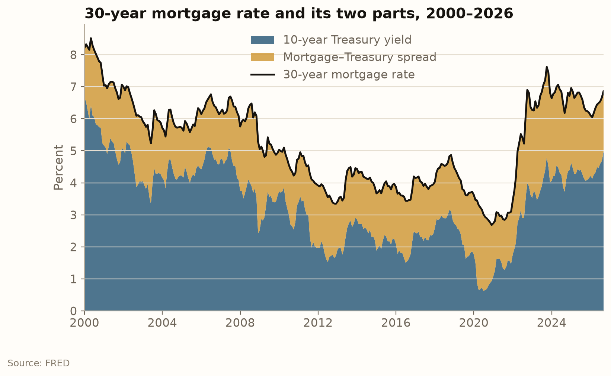
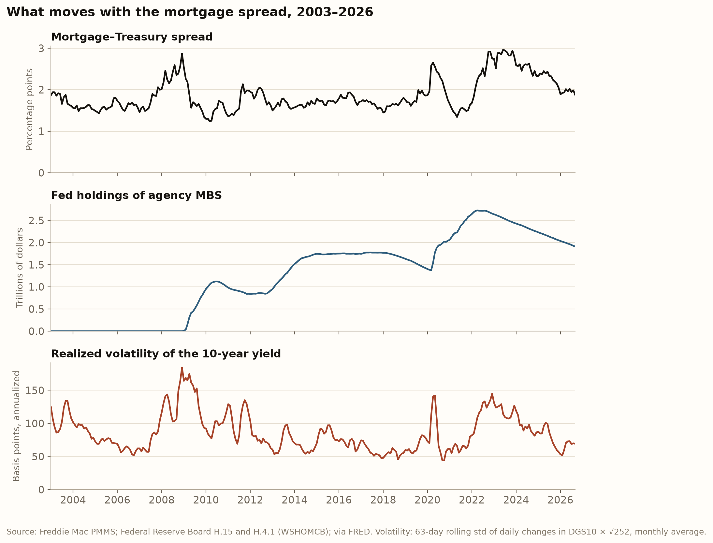

Expectation of real interest rates and inflation expectations are driving up the bond yields and mortgage rates
The 30-Year Fixed Mortgage Rate is the most common type of U.S. home loan. As its name suggests, it takes borrowers 30 years to pay back the entire loan, and the interest rate is fixed at the then-current mortgage rate when the contract is signed. The mortgage rate has risen from 2.74% in January 2021 to 6.86% in September 2026. By the time this blog post is written, the national average is approximately 7.40% to 7.43%.1
The causes of the high level of mortgage rate are intricate, as they involve several layers of transmission, each layer represents stakeholders that are pertinent to the rates. The chain starts with the Federal Funds Rate. The Fed raises this rate in order to curb inflation, and the housing market is the main channel of monetary policy. The Fed cares about indirectly managing mortgages through raising the federal funds rate. This ultra short-term rate then directly affects the yields on 10-year Treasury, which is the benchmark of mortgage rates. Higher mortgage rates means home purchases are less affordable, and this matters to all potential homebuyers. According to Atlanta Fed, the median monthly payment of home purchase takes about 27.8% of a median household income in January 2021. Now it takes more than 45%, effectively deterring many buyers.2
The blog post tries to address two questions: how much of the rise is the Treasury yield, how much is the spread, and within the Treasury yield, is it expected real rates, expected inflation, or risk premia?
Two decompositions
The benchmark for mortgage rate is the 10-year Treasury yield. That is, mortgage rate tends to closely follow the 10-year Treasury (as opposed to the Federal Funds rate). The difference between the 30-year mortgage rate and the 10-year Treasury consists of two spreads: (i) secondary spread: prepayment risk, credit risk, and liquidity, (ii) primary-secondary spread: service fee, net guarantee fee, etc. This post will treat the two spreads as a whole and the equation is simply \text{mortgage rate} = \text{10-year Treasury yield} + \text{mortgage–Treasury spread}. This is not only for simplicity, but more importantly, as we will discuss later in the post, the spread is not the main driver of the higher rates in the current period. Our focus is on the decomposition of the 10-year Treasury yield. The Cleveland Fed’s term-structure model breaks the 10-year Treasury yield into four components: expected path of real short rates, expected inflation, real risk premium, and inflation risk premium. The equation below gives a clearer representation of everything put together:
\underbrace{i^{mort}_t}_{\text{mortgage rate}} = \underbrace{\big(\bar r^{e}_t + \pi^{e}_t\big)}_{\text{expected policy path}} + \underbrace{\big(\rho^{real}_t + \rho^{\pi}_t\big)}_{\text{risk premia}} + \varepsilon_t + s_t
where:
- \bar r^{e}_t: expected real interest rate (the average real short-term rate expected over the next ten years)
- \pi^{e}_t: expected inflation rate
- \rho^{real}_t: real risk premium
- \rho^{\pi}_t: inflation risk premium
- \varepsilon_t: Cleveland Fed’s model residual (the gap between the actual 10-year yield and the model’s fitted yield)
- s_t: mortgage-Treasury spread
Three data choices follow. All series are converted to monthly averages, so that weekly, daily and monthly data line up on the same dates. January 2021 is the base month for every “change since” calculation, because that is when the mortgage rate bottomed; a trough base maximizes the measured change by construction. The model residual is kept as its own piece, so that the six pieces add up exactly to the change in the mortgage rate.
The spread’s history

Figure 1 gives a simple decomposition of the 30-year mortgage rate. The spread’s long-run norm is 1.69 pp on average from 2010 to 19, and it peaked at 2.97 pp in June 2023. It is now printing at 1.87 pp, which is just slightly above the long-run average pre-pandemic and post-GFC.
Cleveland Fed’s model vs. NY Fed’s model
The Cleveland Fed’s model is only one way of decomposing the rates, and it would be conducive to check it against other models, such as New York Fed’s ACM model along with Treaury Inflations-Protected Securities (TIPS). THe table below shows that both models agree that expected policy path, not the term premium, is the main driver, and in 2026 both say all of it. TIPS data also supports the same framing. Over Jan 2021 and Sep 2026, the TIPS real yield rose 3.64 pp and the breakeven 0.27 pp, suggesting that the market believes the rise was almost all real. However, the models disagree on the exact contribution of term premium. From January 2021 to September 2026, while the Cleveland Fed’s model indicates that term premium contributes 0.23pp, the NY Fed’s model claims it contributes 1.31 pp. It is noteworthy that Cleveland’s expected inflation rose more than breakevens. Its model had 10-year expected inflation at 1.38% in January 2021 against a 2.08% breakeven.
| Jan 2021 → Oct 2023 | Jan 2021 → Sep 2026 | Jan → Sep 2026 | |
|---|---|---|---|
| Cleveland: expected nominal path (real path + expected inflation) | 3.01 | 3.51 | 0.73 |
| Cleveland: premia (real + inflation risk premium) | 0.36 | 0.23 | 0.09 |
| ACM: expected nominal path | 2.87 | 2.57 | 0.72 |
| ACM: term premium | 0.91 | 1.31 | -0.02 |
| TIPS: real yield | 3.41 | 3.64 | 0.73 |
| TIPS: breakeven inflation | 0.30 | 0.27 | 0.04 |
| 10-year Treasury yield (actual) | 3.72 | 3.91 | 0.78 |
What moves the spread

Panel 1 shows that the spread spikes line up with the volatility spikes in 2008–09, spring 2020, and 2022–23. The mechanism is the prepayment option. A homeowner can refinance whenever rates fall, so the investor holding the mortgage is short that option. When rate volatility rises, the option is worth more and investors demand a wider spread to hold mortgages. Volatility went from about 50 bp in 2021 to about 145 bp in early 2023, and the spread from 1.4 pp to 2.97 pp. In Panel 2, the Fed’s balance sheet shows up in the spread too. The cleanest episode is 2009 wheb holdings go from zero to 1.1 trillion in about a year and the spread falls from 2.9 pp to 1.3 pp, even though volatility was still high. Since 2024, the Fed is still shrinking its holdings, yet the spread has come back to 1.87 pp, near its 2010–19 average. Volatility fell from ~140 bp to ~70 bp over the same period. So the recent normalization tracks volatility, not the Fed’s balance sheet, which suggests the prepayment-option channel is the stronger of the two.
Caveats
- The components for the decomposition are model estimates (Haubrich–Pennacchi–Ritchken), and a different model splits them differently (see Table 2) and we could potentially arrive at different conclusions. But in this case, different models at least agree with each other about the main driver.
- The model does not fit the 10-year yield exactly. The residual averages −0.33 pp over the sample and reaches 1.23 pp in absolute value, but it moved only 0.17 pp between January 2021 and September 2026, so it does not change the ranking of the pieces.
- The base month is the trough of the mortgage rate, which maximizes the measured change by construction. A later base, such as the first Fed cut in September 2024, would give smaller numbers but the same ordering.
- The spread is the Freddie Mac survey rate minus the 10-year constant-maturity yield. It is not an MBS option-adjusted spread, so it mixes the secondary-market spread with lender margins and fees.
Takeaway
To conclude, of the 4.13 pp rise in mortgage rates since January 2021, 3.91 is the Treasury yield and 0.22 is the spread. Within the Treasury yield, the expected path of real policy rates accounts for 2.31 pp (56% of the mortgage move) and expected inflation for 1.19.
Risk premia are small under the Cleveland model and about a third of the Treasury move under the NY Fed’s ACM model. The spread problem of 2023 has largely gone, but the rate problem has not.
Data and code
- Mortgage rate: Freddie Mac Primary Mortgage Market Survey, 30-year fixed, via FRED (
MORTGAGE30US), weekly. All FRED series were downloaded withfredapion 4 October 2026. - Treasury yields: Federal Reserve Board H.15, via FRED: 10-year constant maturity (
DGS10), 10-year TIPS (DFII10), 10-year breakeven (T10YIE), daily. - Fed MBS holdings: Federal Reserve Board H.4.1, via FRED (
WSHOMCB), weekly. - Yield decomposition: Federal Reserve Bank of Cleveland, Inflation Expectations, via FRED:
EXPINF10YR,REAINTRATREARAT10Y,TENEXPCHAREARISPRE,TENEXPCHAINFRISPRE, monthly. - Term premium cross-check: Federal Reserve Bank of New York, Treasury Term Premia (Adrian, Crump and Moench), daily file, downloaded 3 October 2026.
- Affordability: Federal Reserve Bank of Atlanta, Home Ownership Affordability Monitor.
- Code: github.com/1iiiiii/Mortgage-Rate-Decomposition. Four numbered notebooks download the data, build the monthly series and contributions, and save the figures and every number quoted above to
results/.
Footnotes
Freddie Mac’s Primary Mortgage Market Survey, which is the series used throughout this post, averaged 7.28% for the week of 1 October 2026 (7.03% the week before). Freddie Mac, 1 October 2026.↩︎
Federal Reserve Bank of Atlanta, Home Ownership Affordability Monitor: the share of median household income needed to cover the payment on a median-priced home, with 30% as the affordability threshold.↩︎